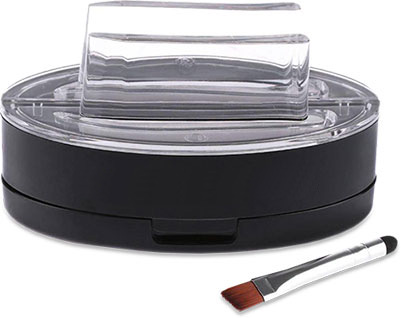
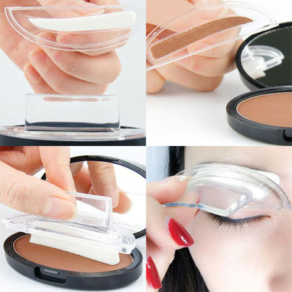
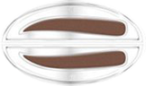
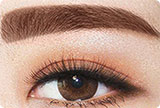
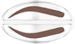
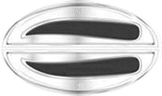
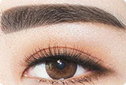
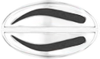

Vetullat e mrekullueshme
Vetull Vula e Bukurisë
Ideale vetull në pak sekonda
*Ky çmim është për lekë të reja.
Çfarë është Vula e Bukurisë së Vetullave?
Vula e Bukurisë së Vetullave është një pajisje bukurie që duket si një vulë plastike në formën e vetullit të një gruaje dhe është e bashkangjitur në një bazë plastike të pajisur me një dorezë. Ky material është i mbarsur me një bojë pluhuri. Për të bërë përbërjen e vetullave me vulë, duhet të shtypni lehtë sfungjerin në pluhurin e vetullave, ta vendosni atje ku dëshironi të jetë në formën e vetullave tuaja dhe të shtypni nga një skaj në tjetrin. Pas disa sekondash, vula mund të hiqet. Pasi ta keni bërë këtë, do të shohim se qimet e vetullave kanë marrë formën e vulës dhe kanë marrë ngjyrën.
Vula i përshtatet të gjithëve përveç një lloji të caktuar të fytyrës ose një vetull shumë të shtrirë. Vetullat "e mbyllura" nuk kërkojnë përdorimin e xhelit fiksues. Ngjyrosja në to zgjat deri natën. Hiqni ngjyrën nga vetullat duke përdorur locion të zakonshëm ose ndonjë mjet tjetër për heqjen e përbërjes.
Ngjyrat e disponueshme
Set kafe e erret
Për vetullat e drejta
 Vulat e formave të tjera
(Mund të porositen veçmas)
Për vetullat e rrumbullakëta
Për vetullat e lakuara
Set i zi
Për vetullat e drejta
 Vulat e formave të tjera
(Mund të porositen veçmas)
Për vetullat e rrumbullakëta
Për vetullat e lakuara
Rruge aplikacion:

Shtrydhni sfungjerin lehtë në pluhurin e vetullave.
Vendoseni aty ku dëshironi të jetë forma e vetullave tuaja dhe shtypni nga një skaj në tjetrin.
Kjo ishte gjithçka, ata janë gati! Të shpejtë, të thjeshtë dhe të përsosur!
Si të porosisni?
Lini një kërkesë në faqen tonë të internetit
Përfaqësuesi ynë do t'ju kontaktojë për të përfunduar porosinë
Porosia vendoset me korrier brenda 1-3 ditëve të punës
Ju paguani për porosinë pas marrjes
Rishikimet e blerësve
Unë jam një njeri me vetulla problematike, kjo vulë më shpëtoi. Pavarësisht nëse luftoja vetëm me ta apo po kthehesha te një profesionist - nuk kishte asnjë rezultat. Por Vula e Bukurisë më ndihmoi të zgjidhja këtë problem - vetullat përfundimisht u bënë uniforme.
Ideale për ata që thjesht nuk kanë kohë të ulen me durim dhe të rregullojnë vetullat e tyre. Tani jam shumë e qetë për vetullat, sepse tani duhet vetëm një minutë për përbërjen e tyre. Vendos vulën, pres disa sekonda dhe jam gati të dal. Fantastike!
Unë gjithmonë kam qenë skeptik ndaj blerjeve në internet, por vula e vetullave më ka befasuar me cilësinë e saj. Përhapet në mënyrë të barabartë, pa gunga dhe nuk turbullon syrin. Vetullat bëhen të trasha dhe mbresëlënëse. Unë jam çmendurisht i lumtur me këtë blerje!
Porosit tani
Vetullat e mrekullueshme
Vetull Vula e Bukurisë
Ideale vetull në pak sekonda